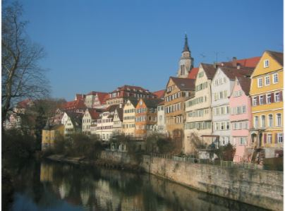
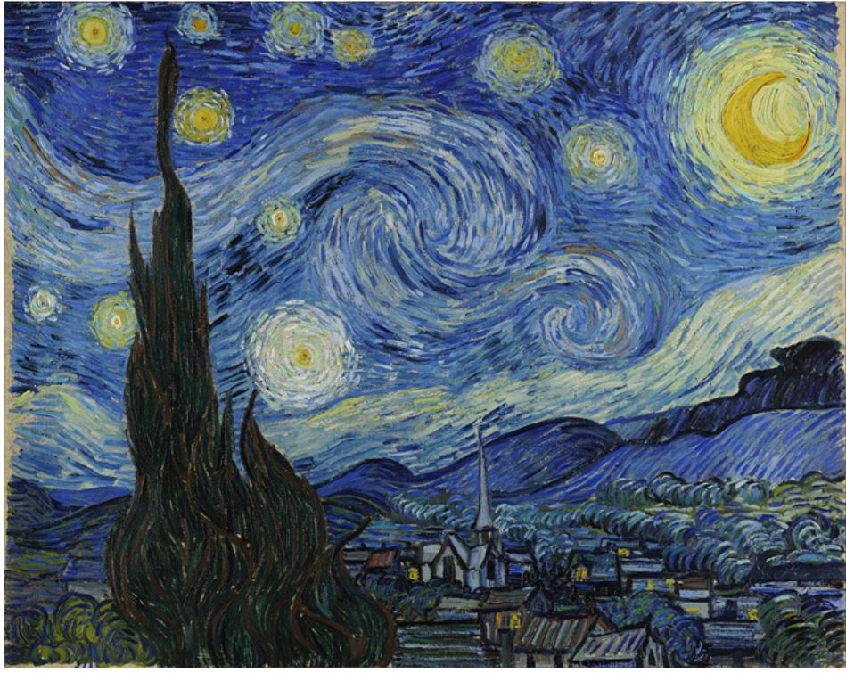
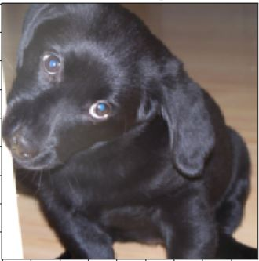
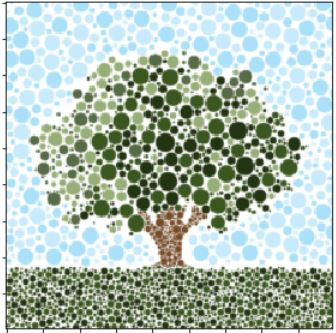
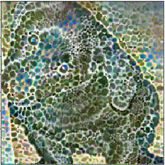

Highlights
- Utilization of a pretrained VGG network
- Extracting statistics from individual layers of the network
- Custom loss function
- Reading academic paper and translating into code.
About
This project involved extracting statistics from layers of a VGG network from two given input images. One image was dubbed the "content" image and the other the "style" image. The goal of this project was to create a new image where the content of the new image mirrored that of the input content image and the style of the new image mirrored that of the input style image like so
Content Image
Style Image
Style Transfered Image

Given an academic paper I created a machine learning process to ask the user for two images, one for content the other for style. I then fed these images into a pretrained VGG network, saving certain layer outputs depending if the input image was the style or content image. I then took a fresh content image, fed it through a vgg network which cached all the network layer outputs, and used these saved layer outputs to minimize with the previously saved style and content layer outputs. By minimizing the style and content layer losses, the fresh content image slowly approached a hybrid of these two images, making the style more and more like the style image and the content more and more like the content image. In order to save specified layer outputs from the VGG netwokr I had to create a custom VGG wrapper which received as input a list of layers to track and returned a vgg network which would produce a cache system of the layers specified.
By far one of my favorite projects, playing around with the different style/content combinations was very fun. Try it out!
Content Image
Style Image
Style Transfered Image
Source Code
Available on Github